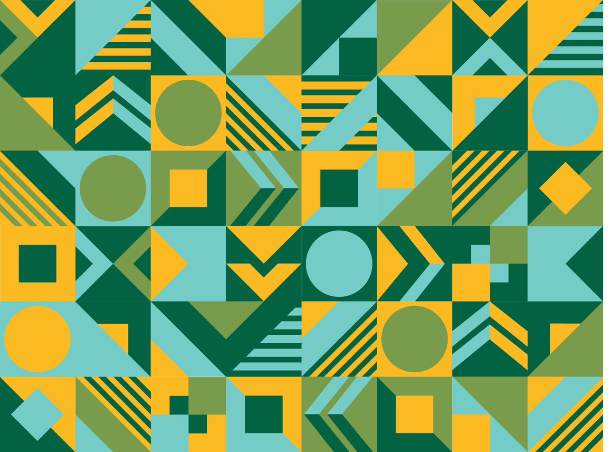

Each option below shows a forest panel (left) and a paper panel (right),
so you can judge legibility on both. Options 2–5 & 7 use crops of the real
Foundry_Pattern.jpg; options 1 & 6 are clean SVG motifs. Tell me the number(s)
you like (and dark/light tweaks) and I'll wire it into the editor panels.

The motif vocabulary: triangles, circles, nested squares, chevrons, diagonal stripe-fans.